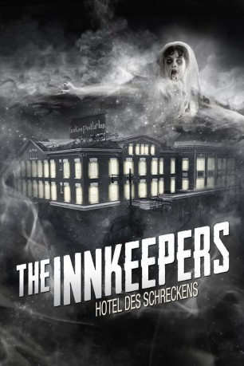

#11661 The Innkeepers - Hotel des Schreckens
Alternativ: The Innkeepers (Englischer Titel)
 
 IMDB-Wertung: 5.4 / 10
IMDB-Wertung: 5.4 / 10  Metascore: 64
Metascore: 64 
Am letzten Wochenende, bevor das Yankee Pedlar Inn geschlossen werden soll, beschließen die Angestellten Claire und Luke, Beweise für einen angeblichen Geisterspuk zu finden. Dabei lernen die Spätzwanziger einen der letzten Gäste des Hotels kennen, die in die Jahre gekommene Fernsehschauspielerin Leanne Rease-Jones, die offenbar das zweite Gesicht besitzt und dem Paar bereitwillig bei seinen Recherchen hilft. Mehr und mehr stellt sich heraus, dass Leanne über mehr verfügt als nur telepathische Fähigkeiten.
Jahr: 2011
Dauer: 101 Minuten
FSK: 16
Land: USA Studio: Magnet ReleasingTonspuren:
Untertitel:
Auflösung: SD (720x304) Größe: 1034 MB
Genre: Horror, Drama, Mystery
Regisseur: Ti West
Drehbuch: Ti West
Soundtrack: Jeff Grace
Darsteller:
 Sara Paxton als Claire
Sara Paxton als Claire Pat Healy als Luke
Pat Healy als Luke- Alison Bartlett als Angry Mom
 Jake Ryan als Young Boy
Jake Ryan als Young Boy Kelly McGillis als Leanne Rease-Jones
Kelly McGillis als Leanne Rease-Jones Lena Dunham als Barista
Lena Dunham als Barista- Brenda Cooney als Madeline O'Malley
- George Riddle als Old Man
 John Speredakos als Officer Mitchell
John Speredakos als Officer Mitchell- Sean Reid als Medic
- Kurt Venghaus als Medic
- Thomas Mahoney als Medic
- Michael Martin als Medic
- Michael P. Castelli als Medic
Datei: X:\NEU\Innkeepers - Hotel des Schreckens, The (2011, FSK16, 720x304).avi seit 13.08.2019
 Es gibt insgesamt 187 Filme in der Gruppe 'NEU'
Es gibt insgesamt 187 Filme in der Gruppe 'NEU'